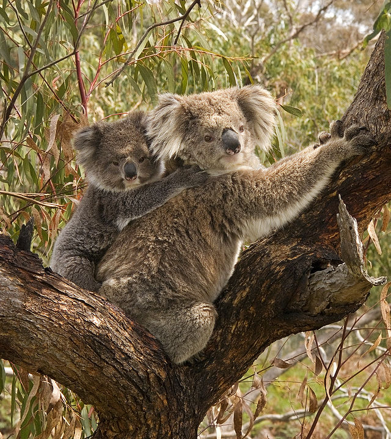

BTS SIO1: travaux en HTML CSS
Accueil
exemples pour apprendre
information sur les koalas
recette de gâteau aux noisettes
Le Koala
Koala et bébé

Le koala (Phascolarctos cinereus)
marsupial arboricole herbivore
vit en Australie
seul représentant vivant de la famille des Phascolarctidés
Habitat
Locomotion